Find the Insider across four real Peninsula towns. Fourteen static tiles across feed, carousel, stories and two wide heroes, plus one motion study, every tile rendered from one source on the Harbour palette. PI leaves the frame in every painted tile; the hook slide is her mark and the witness slide is deliberately empty, because she has already gone.
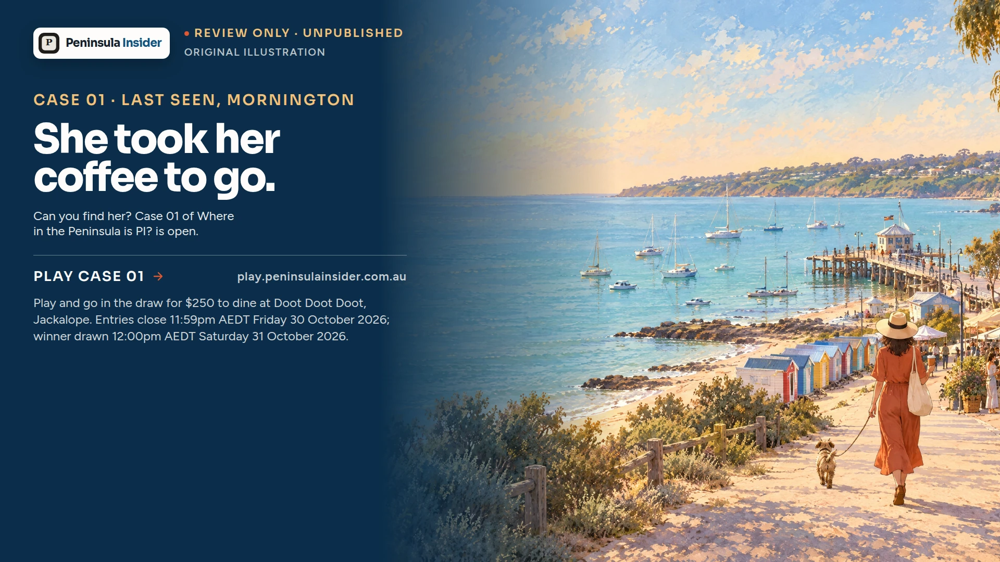
Three weeks across feed, carousel, stories, web/email heroes and motion. All fourteen static tiles and the 1080 × 1920 motion cut are built. Nine core Instagram posts are scheduled in Buffer from 30 September through 30 October; one supporting Story remains ready in the draft library. Entries close 11:59pm AEDT Friday 30 October 2026; winner drawn 12:00pm AEDT Saturday 31 October 2026.
Introduce the game with the primary feed tile, a five-slide carousel that opens the case and explains how it works, and three story frames that drive play. The prize sits under the call to action, never as the headline.
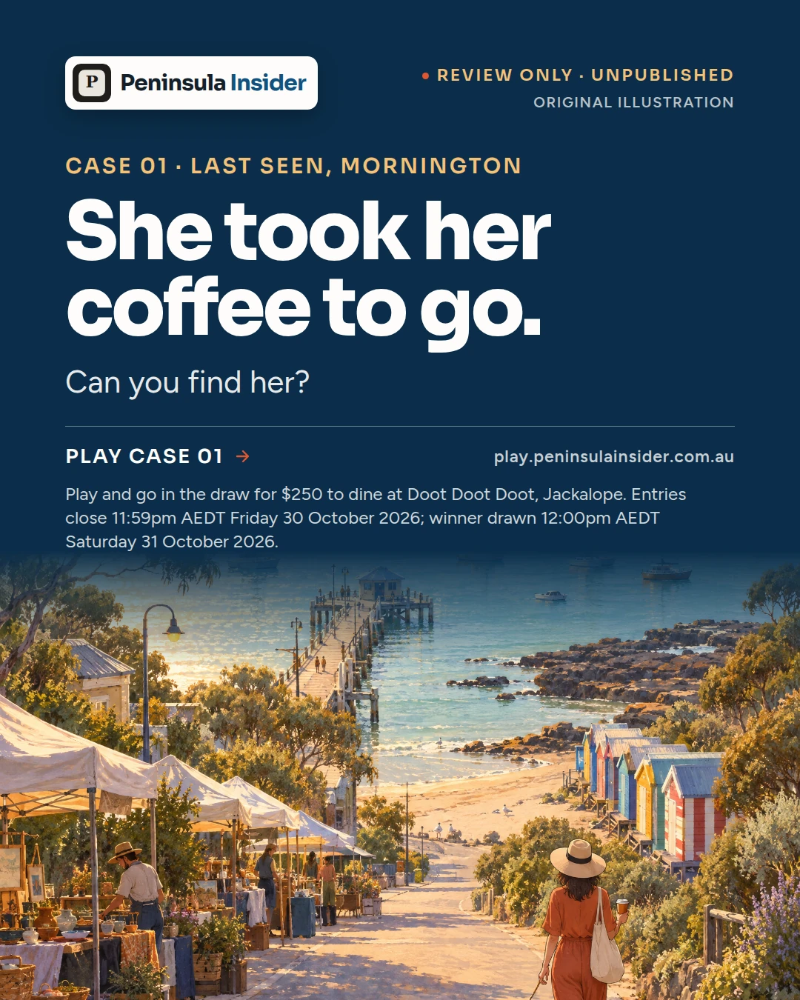
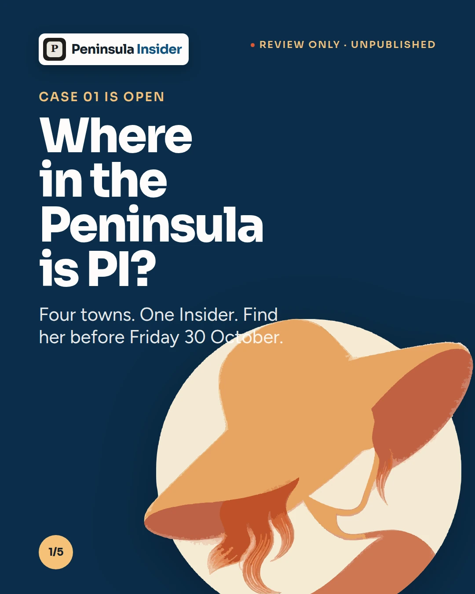
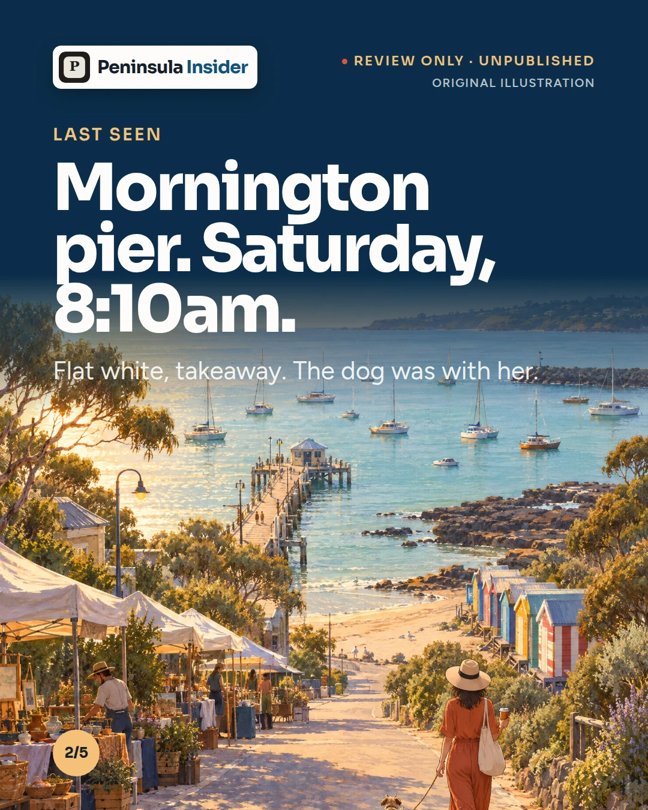
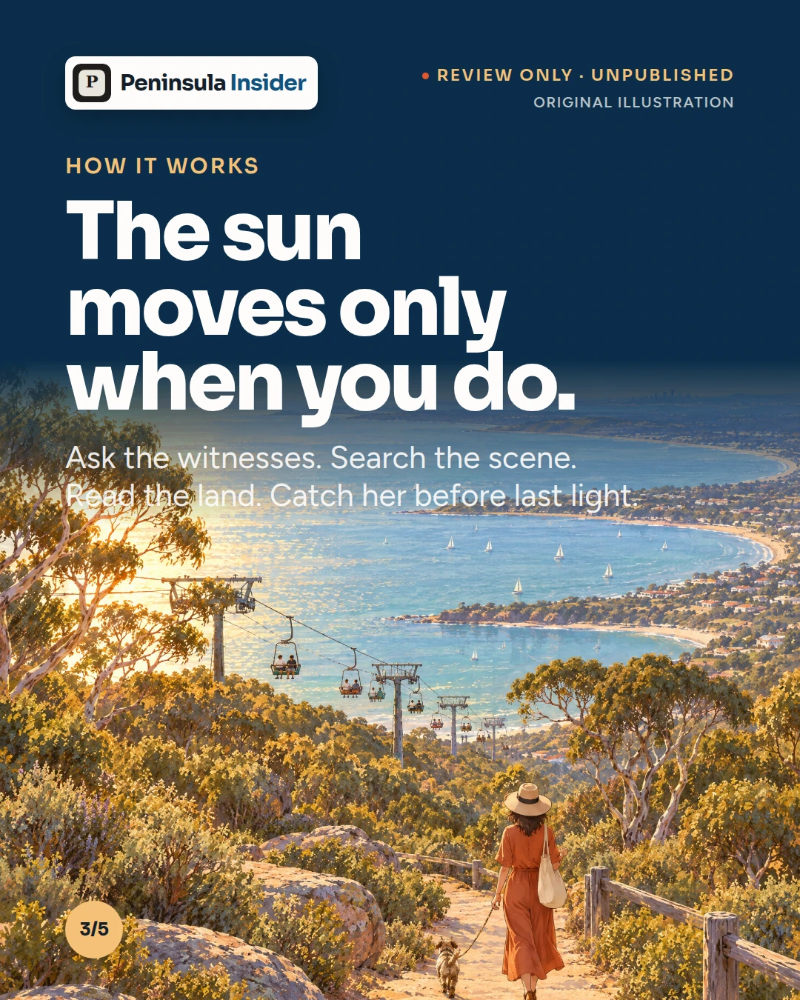
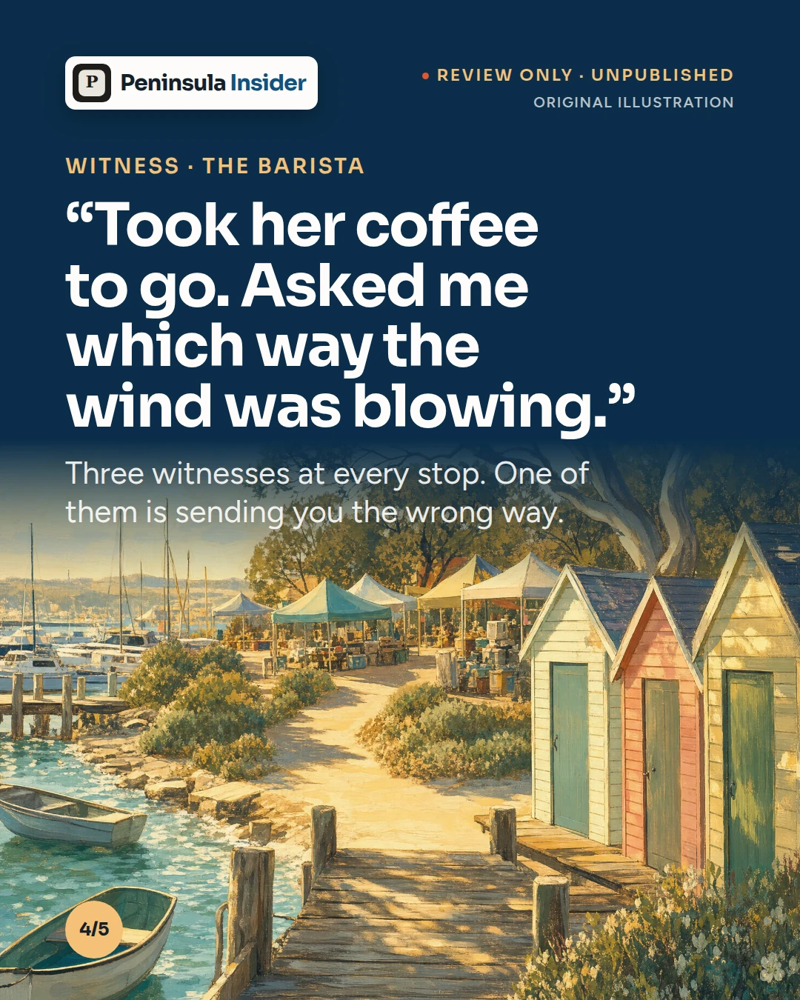
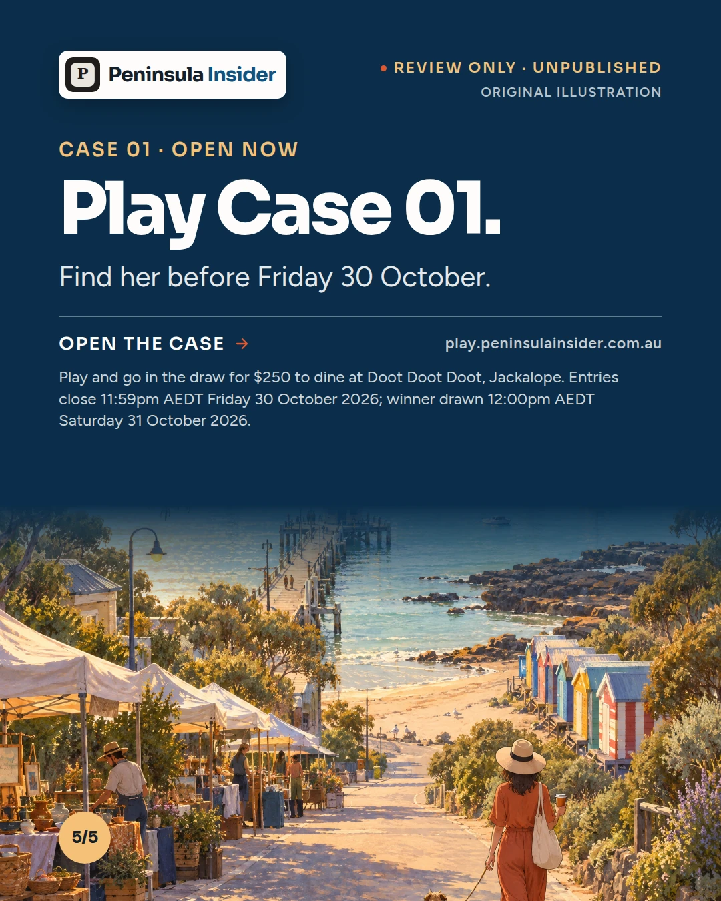
Each pack contains five numbered, production-size JPG slides, a multi-page PDF and a README. Choose the channel below; the posting method is different for LinkedIn.
Upload the five JPG slides to the Instagram carousel draft in numbered order. The PDF is an approval proof only.
Upload the five JPG slides to the Facebook draft in numbered order. The PDF is an approval proof only.
Upload the PDF to the LinkedIn draft as a document carousel. The ZIP also contains five JPG production sources.
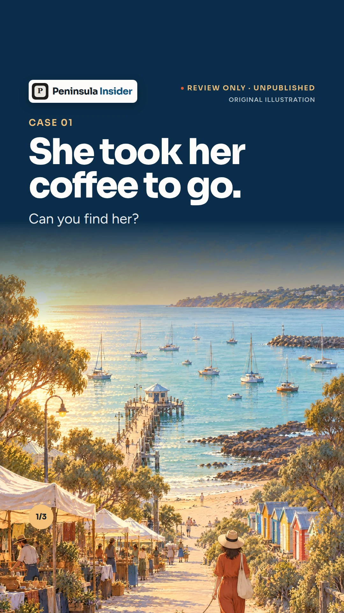
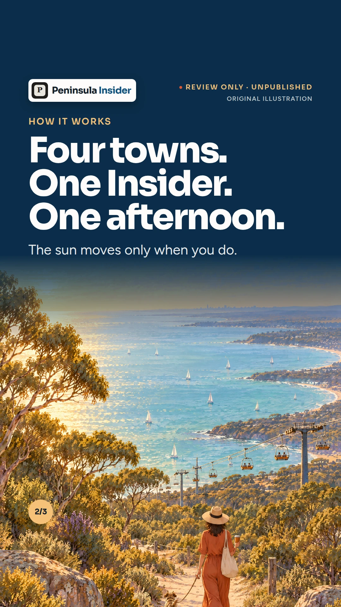
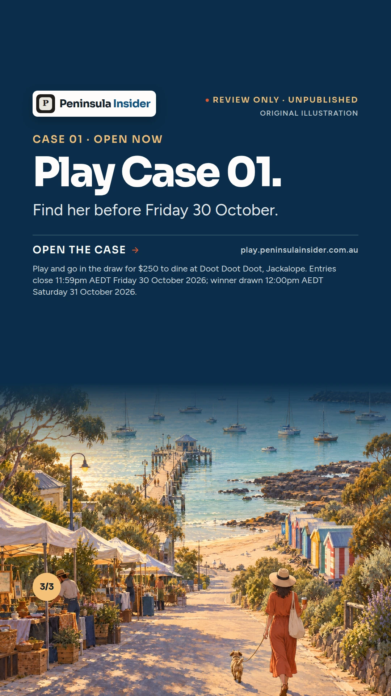
Copy for Instagram feed, carousel and stories. Each format serves a distinct moment in the player journey. The route is never stated in public copy; it is the answer.
A second feed tile keeps the search alive from the hinterland, the wide hero goes on the site and in the newsletter, and the completed 1080 × 1920 motion cut is ready for Stories and Reels.
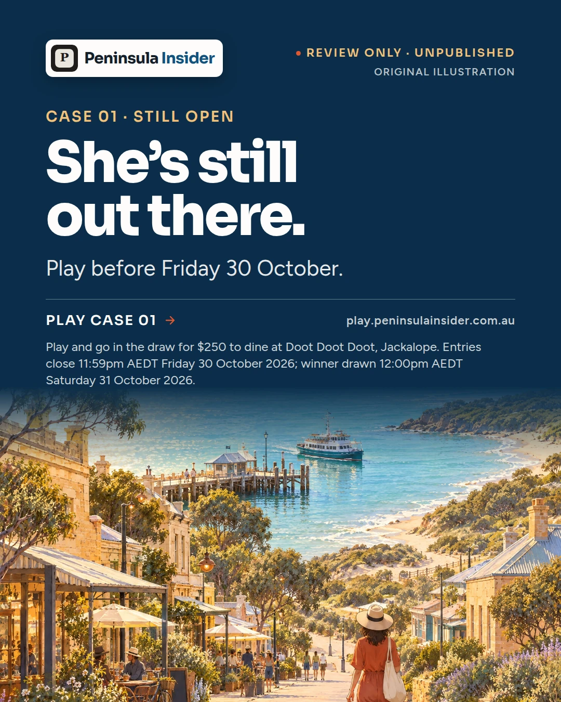
Final push: an urgency tile and a countdown story, a closing wide hero for the site and the newsletter, and a reshare of the Week 1 carousel. Entries close 11:59pm AEDT Friday 30 October 2026; winner drawn 12:00pm AEDT Saturday 31 October 2026.
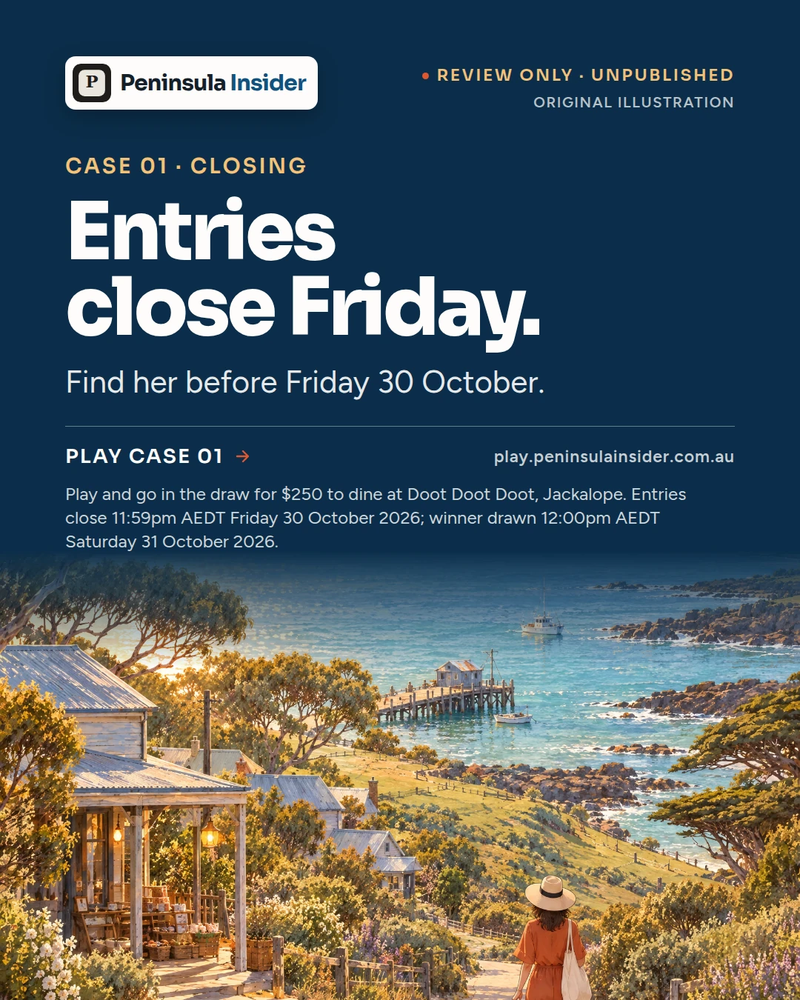
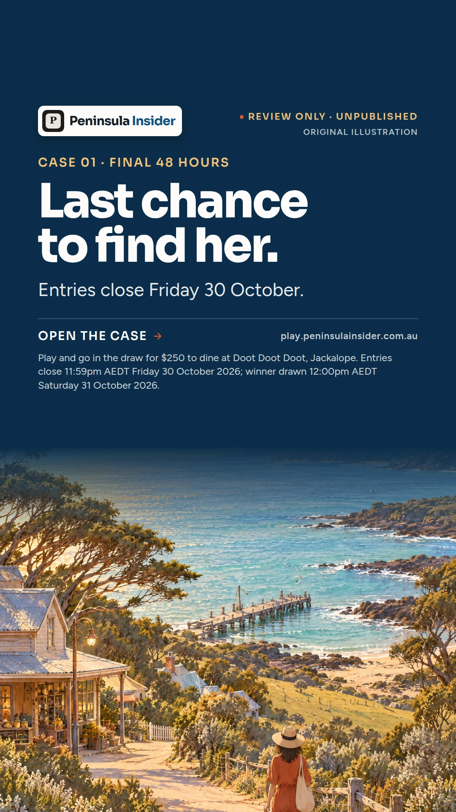
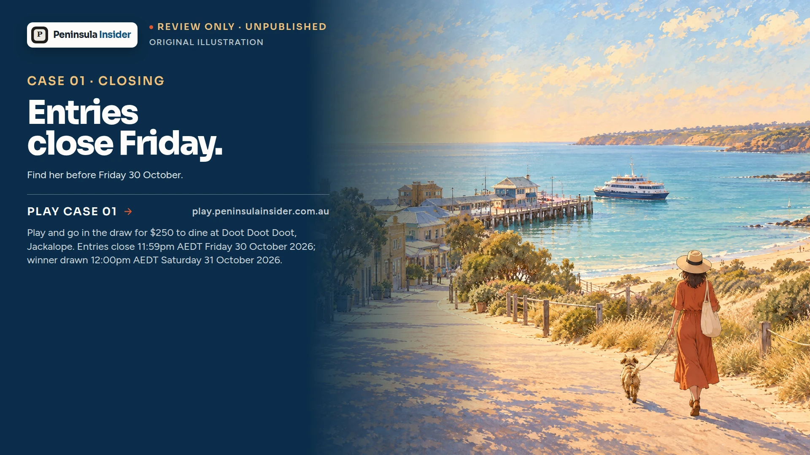
The original five-second motion study is preserved, with a release-ready 1080 × 1920 Stories/Reel cut for Buffer. Light and water move; the campaign copy stays in the post caption.
Every asset with the copy that goes with it. The carousel is packaged separately for Instagram, Facebook and LinkedIn, with numbered production files and channel instructions.
Nine core Instagram posts are scheduled across launch, sustain and close. Facebook and LinkedIn production packs remain labelled and ready for channel use.
assets/exports/release/.The Instagram schedule is active through 30 October. Use the channel links below to inspect scheduled posts and the remaining supporting drafts.
This button opens Buffer. It does not schedule or publish from this public page.spoiler_policy in the provenance receipt.asset-renderer.html on the Harbour palette; renderer, capture script and guard committed, so the pack regenerates from source. The guard fails the build on an off-token colour, copy that drifts from this receipt, a solution leak, a wrong dimension or an em-dash.